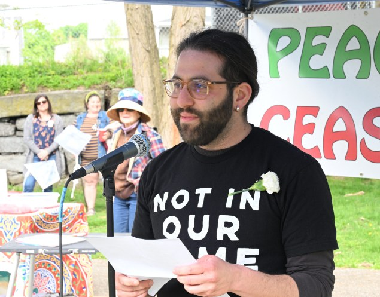
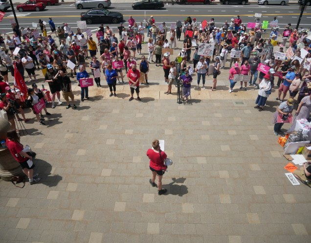
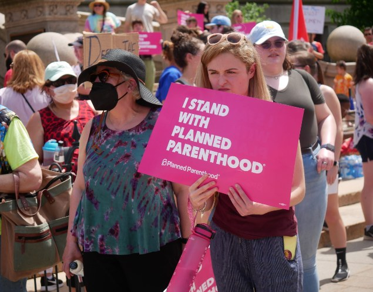

About Us
Free Worcester isn’t just an organization; it’s a commitment to a brighter, more free tomorrow.

Bringing about change one step at a time.
“Free Worcester” is a grassroots organization dedicated to fostering community solidarity and empowerment in Worcester, Massachusetts. Founded by a group of passionate local activists and volunteers, Free Worcester operates on the principle that access to essential resources and services should be available to everyone, regardless of economic status.

History About Us
Free Worcester was founded initially in 2019 under the name Free Lakeside. It was started by a group of concerned residents of the Lakeside Public Housing Complex after the community was faced by environmental injustice and exploitation. Close to 200 residents signed the petition asking for change in an unprecedented organizing effort made up of residents, community advocates, students and local leaders.
After succeeding in our campaign we decided to expand to combine underserved communities across the city.
Since then Free Worcester has worked tirelessly on grassroots community issues that are typically swept under the rug. Whether it’s addressing illiteracy in the community or the effects of violence on the youth, Free Worcester has served as the voice for countless people and groups who felt silenced by the culture of the city, allowing us all to speak up and be heard together.

Nelly Medina - Founder
We combine community with responsibility.
Free Worcester is working every day on a myriad of issues to uplift and support a diverse number of communities across Worcester Massachusetts.

Uplifting Voices
Free Worcester uplifts marginalized voices to empower communities who’ve been underrepresented and silenced.
Learn More
Rallying the Community
Free Worcester brings the community together through collective action and solidarity to address social injustices and drive meaningful change.
Learn More
Standing for Causes
Free Worcester champions a wide range of critical issues to promote justice, equality, and sustainability within our community.
Learn MoreAn Organization You Can Trust
Our commitment to the community isn’t just a promise you need to rely on but something born out of a reputation built on showing up and speaking out. Just look at the community partners we work with to see the values we hold and the populations we represent.


Get Involved Today
To make a long term change it requires the support of the entire community. No matter who you are we are all in this together and we look forward to you partnering with us to create a Worcester that is free for everyone.
Let’s Go !